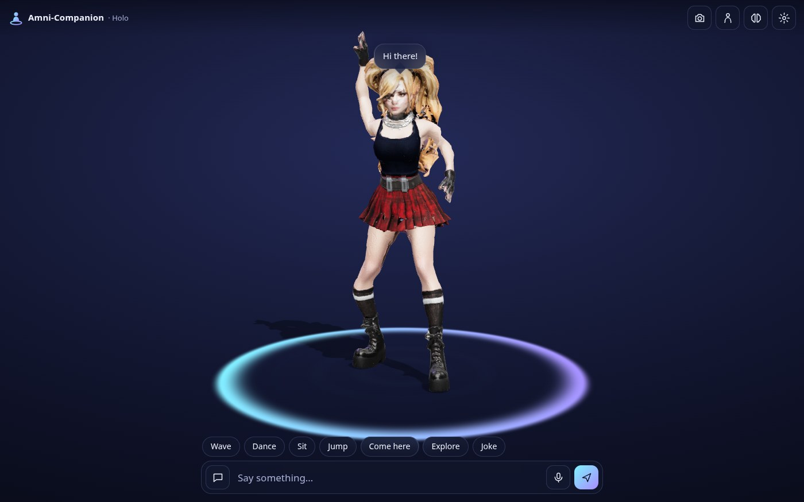
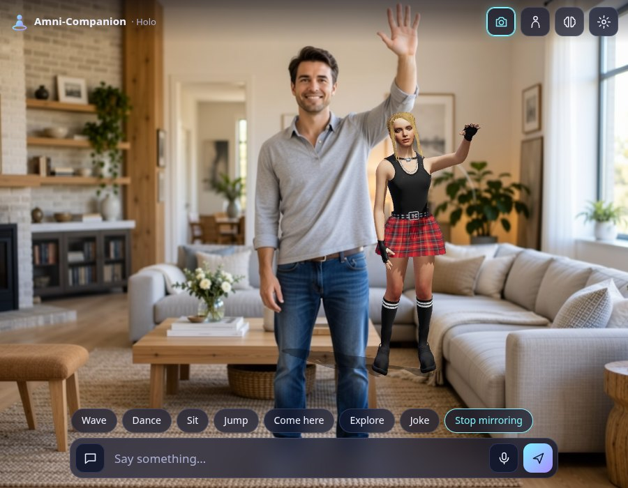
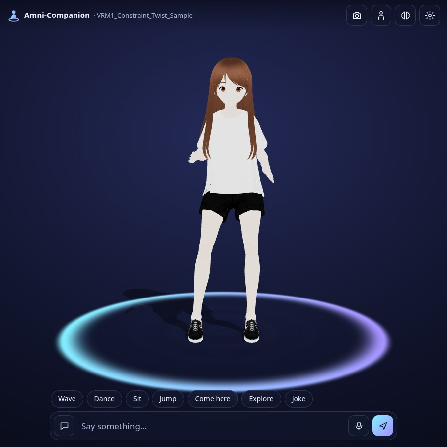
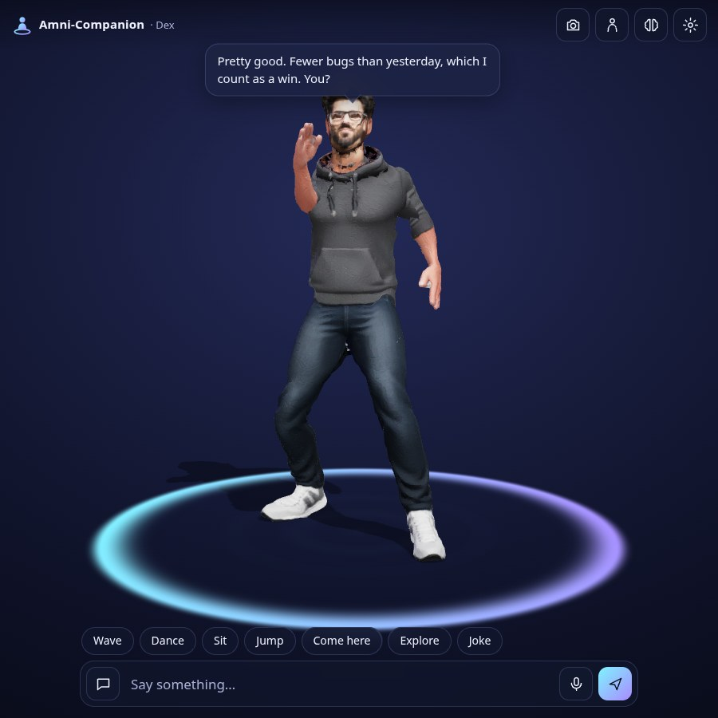

A 3D AI COMPANION IN YOUR BROWSER • BRING YOUR OWN MODEL AND KEY • AR WITH BODY TRACKING • OPEN SOURCE

Amni-Companion puts an animated 3D character in your browser that you can talk to, show things to, and stand next to in AR. Pick Holo or Dex, or drop in any rigged model you own. Connect the AI you already pay for, or use the small offline brain. Nothing to install, no account, and nothing leaves your device that you didn’t send.
Drop in a rigged .glb or .vrm: Mixamo, VRoid, Ready Player Me, Unreal, Rigify or Amni-CAD. The skeleton is matched by meaning and the whole animation library is retargeted onto it.
Claude, OpenAI, Grok, Gemini, OpenRouter, Ollama, LM Studio or any OpenAI-compatible endpoint, called straight from your browser with your key. An offline brain works with no key at all.
Your companion stands over your camera feed and can mirror your body like a reflection, tracked on-device with MediaPipe.
Waves, claps, pointing, hands up, thumbs up, peace signs, smiles, winks, nods and head shakes, plus objects you hold up. It reacts out loud if you let it.
On WebXR phones and headsets, place it on your floor and it walks over when you call it.
No accounts, servers or analytics. Models, keys, settings and history stay in your browser, and one button erases them all.


.vrm dropped in and dancing within seconds.
Connected brains are taught a tiny set of tags. When a reply carries one, the companion acts it out: it waves, dances, walks to you, glances around or changes expression. The offline brain uses the same tags.
| PARAMETER | VALUE |
|---|---|
| Runs in | Chrome, Edge, Safari and Firefox on desktop and phone; installable as an app and works offline after the first visit |
| Models | Rigged humanoid .glb / .vrm (VRM 0.x and 1.0 with node constraints); auto skeleton matching across 22 body parts; mouth, blink and expression blend shapes |
| Brains | Claude (default claude-opus-5-5), OpenAI, Grok, Gemini, OpenRouter, Ollama, LM Studio, any OpenAI-compatible endpoint, or offline |
| Recognition | On-device MediaPipe pose, hand gestures, face blend shapes and object detection |
| AR | Camera AR on any device with a camera; WebXR room placement where supported |
| Voice | Web Speech recognition (on-device where the browser offers it) and speech synthesis |
| Core | Written in Gold, compiled to checked Helium and WebAssembly: skeleton matching, retargeting, pose solving, tracking filters, recognition and the offline brain |
| Animation | Quaternius Universal Animation Library (CC0) |
| License | AGPL-3.0, free |